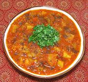

|
Tinda Potato SabziIndia - Punjab - Meya-patata (Sindhi); Aalu Tinde ki Sabji (Hindi) | ||||
| Makes: Effort: Sched: DoAhead: |
7 cups *** 2-1/4 hrs Yes |
A gourd stew very popular in the Punjab region of India, especially among the Sindhi people. It is flavorful, has good texture, and is easy to make. See also Comments. | |||
|
|
1 1 14 7 4 1/2 ------- 1/2 1 1/2 1 ------- 1-1/2 1 1-1/2 8 ------- ar ar ------- ar |
# # oz oz cl in --- T t t t --- T t c oz --- --- |
Tinda Gourd (1) Tomatoes Potatoes (2) Onion Garlic Ginger -- Cooking Spices Coriander Seed Chili Powder (3) Turmeric Salt --------- Oil Cumin, whole Water Tomato Sauce (4) -- Garnish Garam Masala (5) Cilantro Leaves -- Serve with Basmati Rice |
PREP (50 min)
|
isv_tinda1 190707a inet var - www.clovegarden.com
©Andrew Grygus - agryg@clovegarden.com - Linking
to and non-commercial use of this page is permitted.